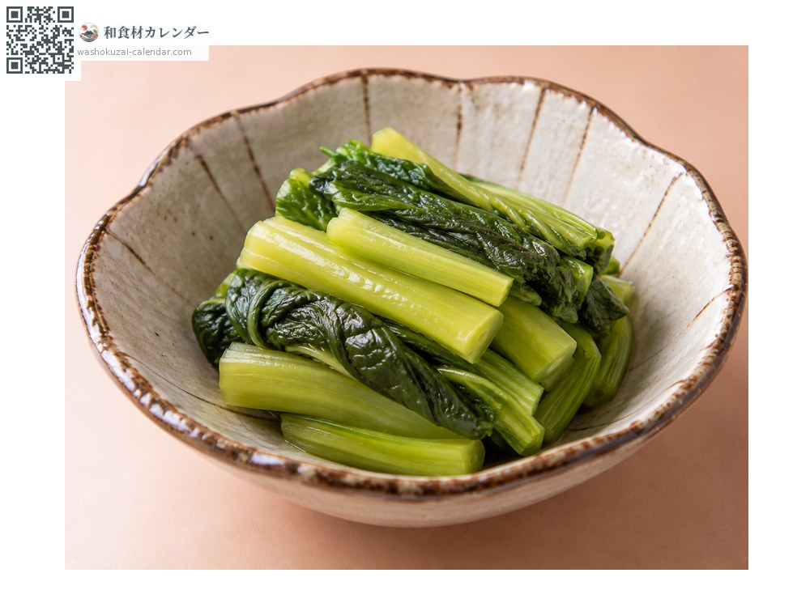
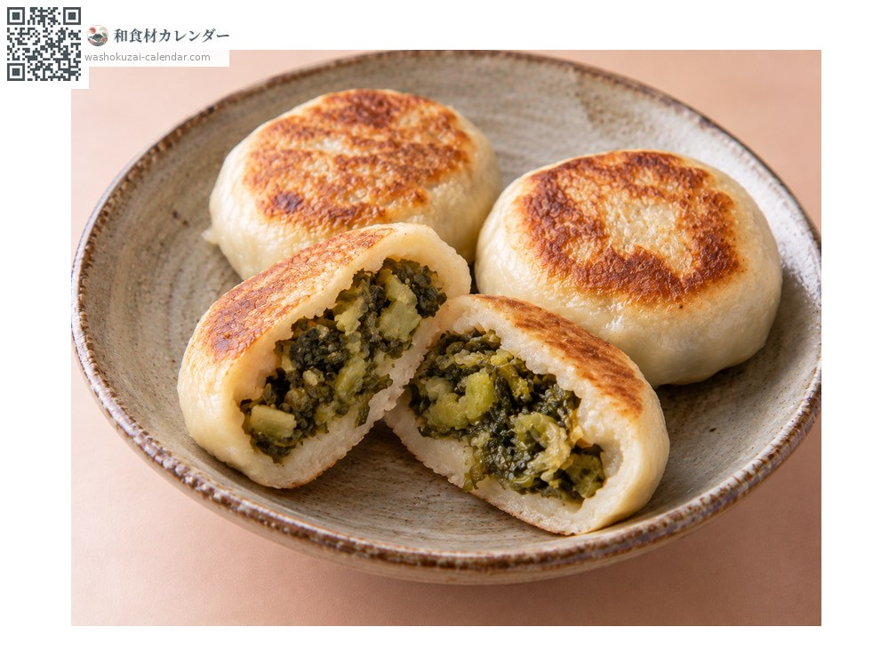
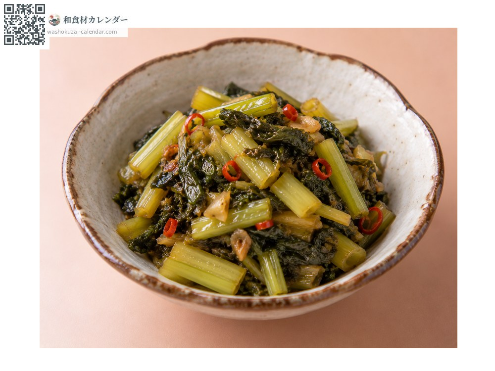
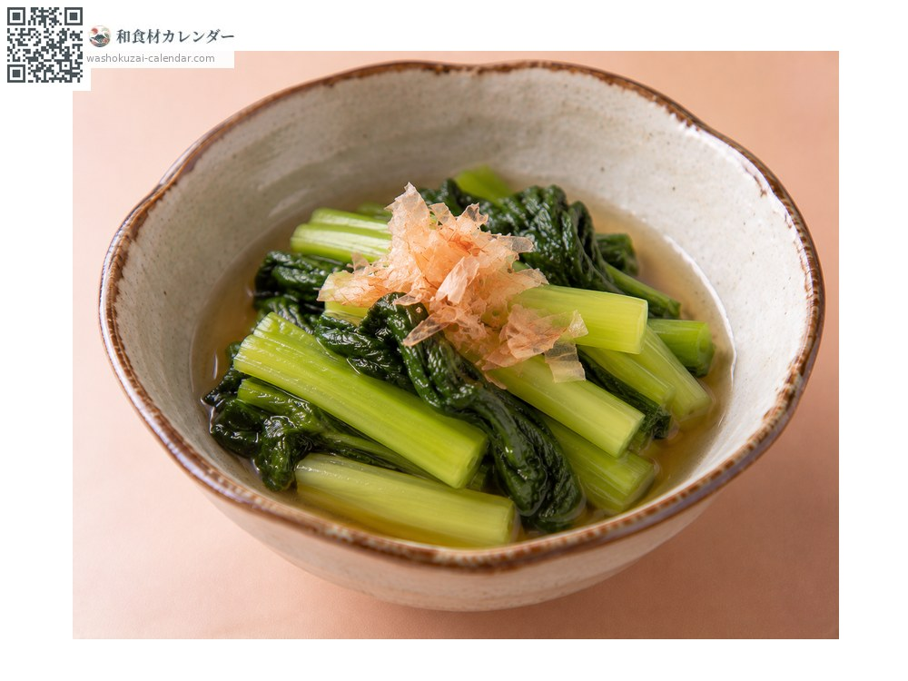

野菜
野沢菜
のざわな
別名・別表記ノザワナ、nozawana
旬は11月・12月

旬の時期
1月
2月
3月
4月
5月
6月
7月
8月
9月
10月
11月
12月
旬出回り
調理法

野沢菜漬け
塩で漬ける。長野を代表する漬物。

おやき
刻んで小麦粉の皮で包み焼く。信州の郷土食。

炒め物
漬けたものを油で炒める。古漬けの活用法。

おひたし
生のものをさっと茹でる。収穫期のみ。
選び方
葉が濃い緑で肉厚、茎が太くまっすぐなもの。傷のないもの。
保存方法
生のものは日持ちしない。すぐに漬けるか冷蔵して2日以内に。
主な産地
豆知識
長野県野沢温泉村が発祥とされ、同地の健命寺の住職が京都から持ち帰った種が元という伝承がある。霜に当たると甘みが増すため、初霜の頃に収穫して漬け込む。株は1メートル近くまで育つ。